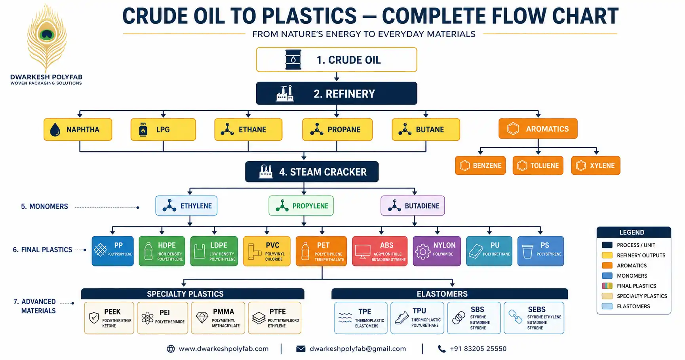
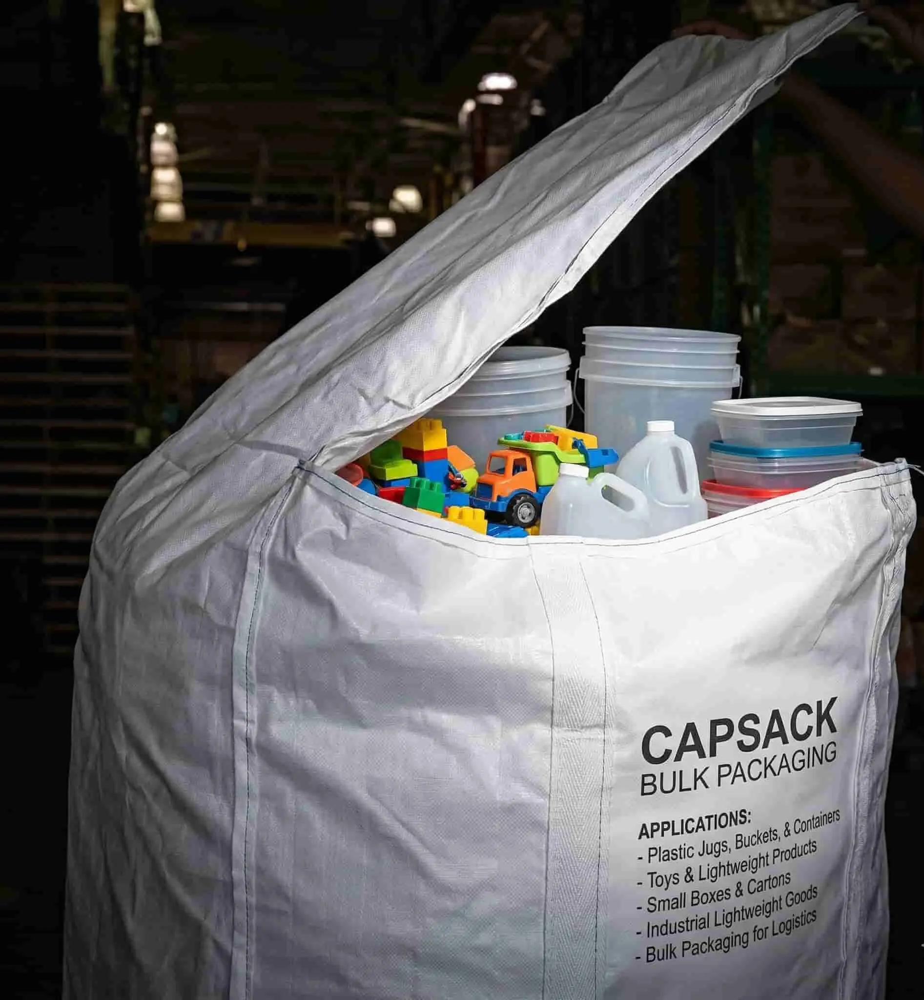
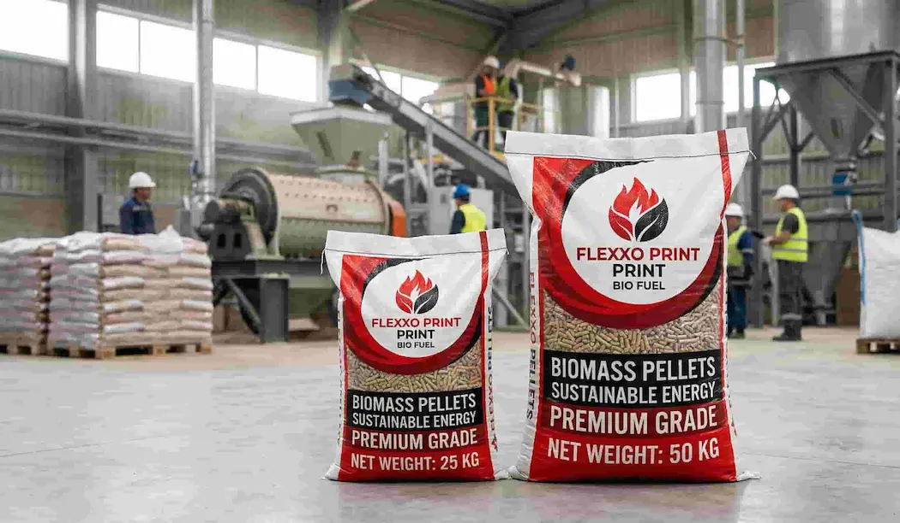

Crude Oil to Plastic: Complete Manufacturing Process & Flowchart Explained

Complete flowchart showing how crude oil is converted into various plastics through refining, cracking and polymerization
Have you ever wondered how plastic is made from crude oil? Every polypropylene (PP) woven bag, HDPE pipe, PVC fitting, and plastic container you use starts its journey as crude oil deep underground.
Understanding the crude oil to plastic manufacturing process is important for anyone in the packaging industry — whether you are a bag buyer, trader, or manufacturer. It helps you understand why PP bag prices fluctuate with crude oil markets, and how the petrochemical supply chain affects your business.
In this comprehensive guide, Dwarkesh Polyfab explains the complete process — from petroleum refinery to polypropylene granules — with a visual flowchart and detailed step-by-step breakdown.
💡 Key Fact: Approximately 4–8% of the world's crude oil is used as raw material (feedstock) for manufacturing plastics. The rest goes into fuels like petrol, diesel and aviation fuel.
📋 Table of Contents
- Overview: Crude Oil to Plastic Process
- Step-by-Step Manufacturing Process
- Interactive Flowchart: Crude Oil to All Plastics
- Types of Plastics Made from Crude Oil
- How This Connects to PP Woven Bags
- Why Crude Oil Price Affects PP Bag Cost
- Polypropylene Manufacturing in India
- Sustainability & Recycling Trends
- Frequently Asked Questions
Overview: How Crude Oil Becomes Plastic
The transformation of crude oil into plastic is a multi-stage petrochemical process that involves chemistry, engineering and industrial-scale operations. Here is the simplified version:
- Crude oil is extracted from underground reserves and transported to oil refineries.
- At the refinery, crude oil undergoes fractional distillation — separating it into fractions like naphtha, LPG, ethane, propane and butane based on boiling points.
- Naphtha (the most important fraction for plastics) is sent to steam crackers.
- Steam cracking breaks naphtha into ethylene, propylene, butadiene and aromatics (benzene, toluene, xylene).
- These building blocks (monomers) are purified and polymerized — linked together into long chains — to create different types of plastics.
- The resulting polymer resin is pelletized into granules and sold to manufacturers who produce finished plastic products.
Step-by-Step: Crude Oil to Plastic Manufacturing Process
Crude Oil Extraction & Transportation
Crude oil is extracted from underground reserves through drilling. India imports approximately 85% of its crude oil requirements from countries like Saudi Arabia, Iraq, UAE and Nigeria. The crude is transported via tankers to refineries.
Fractional Distillation at Refinery
At the refinery, crude oil is heated and separated through fractional distillation. Different hydrocarbons separate at different boiling points. The key fraction for plastic manufacturing is naphtha — a light, volatile liquid.
Other fractions include LPG, ethane, propane, butane, kerosene, diesel and heavy fuel oil.
Steam Cracking of Naphtha
This is the most critical step in plastic manufacturing. Naphtha is fed into steam crackers where it is heated to 800–850°C. At these extreme temperatures, large hydrocarbon molecules break apart into smaller, more valuable molecules called monomers.
The primary outputs of steam cracking are:
Monomer Purification
Before polymerization, monomers must be purified to 99.5%+ grade. Impurities like water, sulfur, and oxygen are removed because they can poison the catalysts used in the next step. This is done through fractionation and chemical treatment.
Polymerization — Creating the Plastic
This is where the magic happens. Purified monomers are fed into polymerization reactors along with specialized catalysts (Ziegler-Natta or metallocene catalysts). Under controlled temperature and pressure, thousands of monomer molecules link together to form long polymer chains.
- Propylene → Polypropylene (PP) — used for PP woven bags, containers, automotive parts
- Ethylene → Polyethylene (HDPE / LDPE / LLDPE) — used for pipes, films, carry bags
- Styrene → Polystyrene (PS) — used for disposable items, insulation
- Vinyl Chloride → PVC — used for pipes, fittings, cables
Pelletizing, Additives & Distribution
The polymer output is extruded, cooled and cut into small uniform pellets (granules). Functional additives are mixed in — such as UV stabilizers, color pigments, anti-oxidants and heat stabilizers — to give the plastic its desired properties.
These PP granules are then packaged in 25 KG bags and shipped to manufacturers like Dwarkesh Polyfab who convert them into finished products like PP woven bags, BOPP laminated bags and printed polybags.
🔄 Visual Flowchart: Crude Oil to Plastics
Follow the journey from crude oil to finished plastic products
Types of Plastics Made from Crude Oil
Different monomers from the cracking process produce different types of plastics. Here is a complete comparison of major polymer types and their industrial applications:
| Polymer | Full Name | Source Monomer | Key Applications |
|---|---|---|---|
| PP | Polypropylene | Propylene | PP woven bags, food containers, automotive parts, packaging |
| HDPE | High-Density Polyethylene | Ethylene | Pipes, water tanks, bottles, carry bags |
| LDPE | Low-Density Polyethylene | Ethylene | Plastic films, food packaging, squeeze bottles |
| LLDPE | Linear Low-Density PE | Ethylene + Co-monomer | Stretch film, liner bags, agricultural film |
| PVC | Polyvinyl Chloride | Vinyl Chloride (from Ethylene + Chlorine) | Pipes, cables, window frames, medical devices |
| PET | Polyethylene Terephthalate | Ethylene Glycol + PTA (from Xylene) | Bottles, polyester fiber, food packaging |
| PS | Polystyrene | Styrene (from Benzene + Ethylene) | Disposable cups, insulation, packaging foam |
| ABS | Acrylonitrile Butadiene Styrene | Acrylonitrile + Butadiene + Styrene | Electronics casings, automotive parts, toys (LEGO) |
| Nylon (PA6) | Polyamide 6 | Caprolactam (from Benzene) | Textile fibers, engineering plastics, zip ties |
| PC | Polycarbonate | Bisphenol A (from Benzene) | Safety glasses, CDs, bulletproof glass, roofing |
How This Connects to PP Woven Bags
At Dwarkesh Polyfab, we purchase polypropylene (PP) granules — the direct output of this crude oil to plastic process — and convert them into finished packaging products through our manufacturing process:
- PP Granules are melted and extruded into flat yarns (tapes)
- Tapes are woven on circular looms into PP woven fabric
- The fabric is cut, printed and stitched into finished PP woven bags
- For premium packaging, BOPP film lamination is added for glossy/matte finish with multicolor printing
This is why the price of crude oil directly impacts the cost of PP woven bags. When crude oil prices rise, naphtha becomes more expensive, which raises propylene costs, which increases PP granule prices — and ultimately your bag cost goes up.
📊 Industry Insight: India's polypropylene demand reached approximately 7.5 million tonnes in 2025-26. Major PP producers in India include Reliance Industries, Indian Oil Corporation (Panipat), ONGC Petro (OPaL), HPCL-Mittal, and GAIL. The Morbi packaging cluster in Gujarat consumes a significant share of India's PP output for woven sack manufacturing.
Why Crude Oil Price Directly Affects PP Bag Pricing
Understanding the price chain from crude oil to PP bags helps buyers make better purchasing decisions:
| Stage | Product | Impact When Crude Oil Rises |
|---|---|---|
| Stage 1 | Crude Oil | Base price increases globally |
| Stage 2 | Naphtha | Refinery output cost rises ₹2,000–5,000/MT |
| Stage 3 | Propylene | Monomer cost increases proportionally |
| Stage 4 | PP Granules | Resin prices rise ₹3–8 per kg |
| Stage 5 | PP Woven Bags | Final bag price increases ₹1–3 per bag |
This is why we always recommend buyers to place orders early when crude oil prices are stable, rather than waiting for prices to rise further.
📞 Need PP Woven Bags at Best Price?
Contact Dwarkesh Polyfab for latest PP bag pricing based on current raw material rates. Use our free calculator to estimate your bag cost instantly.
Polypropylene Manufacturing in India
India is one of the world's fastest-growing markets for polypropylene. Here are the major PP manufacturing plants in India:
- Reliance Industries — Jamnagar, Gujarat (world's largest refining complex)
- Indian Oil Corporation (IOCL) — Panipat, Haryana (integrated petrochemical complex)
- ONGC Petro additions Limited (OPaL) — Dahej, Gujarat
- HPCL-Mittal Energy (HMEL) — Bhatinda, Punjab
- GAIL India — Pata, Uttar Pradesh
- Haldia Petrochemicals — Haldia, West Bengal
- Brahmaputra Cracker and Polymer Limited — Dibrugarh, Assam
The Gujarat petrochemical corridor — particularly the Jamnagar-Dahej-Morbi triangle — forms the backbone of India's polymer packaging industry. Morbi, where Dwarkesh Polyfab is located, is India's largest PP woven bag manufacturing hub, with hundreds of factories converting PP granules into finished packaging products.
Sustainability & Circular Economy in Plastics
The plastics industry is evolving towards more sustainable practices. Key trends in 2026 include:
- Chemical Recycling (Pyrolysis): Converting plastic waste back into pyrolysis oil, which can be used as refinery feedstock to produce new virgin-quality plastics — creating a true circular economy.
- Mechanical Recycling: Used PP bags are collected, cleaned, granulated and re-extruded into recycled PP products, reducing dependence on virgin granules.
- Bio-based Plastics: Development of bio-PP and PLA (Polylactic Acid) from renewable sources like corn starch and sugarcane, offering a petroleum-free alternative.
- Extended Producer Responsibility (EPR): Government regulations requiring manufacturers to collect and recycle a percentage of the plastic they produce.
♻️ Did You Know? PP woven bags are 100% recyclable. At Dwarkesh Polyfab, we encourage customers to return used bags for recycling. This reduces plastic waste and supports India's circular economy goals.
Frequently Asked Questions
Plastic is made from crude oil through a multi-step process: (1) Crude oil is refined through fractional distillation to extract naphtha, (2) Naphtha is heated in steam crackers to produce ethylene and propylene gas, (3) These gases are purified and polymerized using catalysts to form polymer resins like polypropylene (PP), polyethylene (PE), and PVC, (4) The resin is pelletized and sold to manufacturers for making plastic products like PP woven bags.
Approximately 4–8% of the world's crude oil production is used as raw material (feedstock) for manufacturing plastics. Another 4% is used as energy to power the plastic manufacturing process itself. The majority of crude oil goes into transportation fuels like petrol, diesel and jet fuel.
Naphtha cracking (steam cracking) is the process of heating naphtha to 800–850°C in steam crackers. This breaks large hydrocarbon molecules into smaller building blocks like ethylene, propylene, and butadiene. These are the essential monomers used to produce all major plastics including PP, PE, PVC, ABS, PET and nylon. Without this step, plastics cannot be manufactured.
Crude oil → Naphtha → Propylene → PP Granules → PP Bags. When crude oil price increases, each subsequent stage becomes more expensive. A $10/barrel increase in crude oil can increase PP granule prices by ₹3–8 per kg, which translates to ₹1–3 increase per PP bag depending on bag size and weight. This is why PP bag prices are closely linked to global oil markets.
Major plastics from crude oil include: Polypropylene (PP) for packaging and bags, HDPE for pipes and bottles, LDPE for films and bags, PVC for pipes and fittings, PET for bottles, Polystyrene for disposable items, ABS for electronics and automotive, Nylon for textiles, and Polycarbonate for safety equipment. Each has unique properties suited to different industrial applications.
Polypropylene (PP) is a thermoplastic polymer made from propylene monomer. It is the preferred material for industrial woven bags because of its high tensile strength, lightweight nature, excellent chemical resistance, moisture barrier properties, and cost-effectiveness. PP woven bags can carry loads from 10 KG to 100 KG and are used for packaging rice, fertilizer, cement, chemicals, food grains and animal feed.
Yes, through a process called pyrolysis. Plastic waste is heated to 400–500°C in the absence of oxygen, breaking polymer chains back into shorter hydrocarbons. The result is pyrolysis oil, which can be used as refinery feedstock to produce new plastics or as fuel. This technology is gaining traction in India as part of the circular economy drive, and several companies are now operating commercial-scale pyrolysis plants.
Related Articles

How War & Oil Prices Affect PP Bag Costs
Market analysis of global events impacting packaging prices.

Capsacks Bags for Bulk Packaging
Industrial capsacks bags for lightweight bulk product packaging.

Best Bags for Biomass & Biofuel Pellets
Strong moisture-resistant bags for 25kg & 50kg pellet packaging.
🏭 About Dwarkesh Polyfab
We are a leading PP woven bags and BOPP laminated bags manufacturer based in Morbi, Gujarat. We supply export-quality polybags for rice, fertilizer, cement, chemical and food grain industries across India.